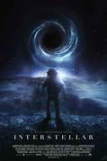

.jpeg)
1. Interstellar
Interstellar (film)
2014 · Action · 2h 45m
Release date: November 7, 2014
Director: Christopher Nolan
INTERSTELLAR is a cinematic experience that is deeply contemplative. The movie takes time to develop and has a few odd editing choices with jump cuts,
but it’s mostly a thrilling immersive adventure, both emotionally and visually. Grounded in reality, INTERSTELLAR does its best to use real science, though much of it is theoretical.
Avengers: Endgame
2019 · Action · 3h 1m
Release date: April 26, 2019
Director: Russo brothers, Joe Russo, Anthony Russo
Overall, 'Avengers: Endgame' is a befitting tribute to the Cinematic Universe that has spawned larger-than-life superheroes and super fans.
At three hours plus, ‘Endgame’ delivers on a lot of its hallmark promises, leaving its fans with a range of emotions and fond memories.
K.G.F: Chapter 2
2022 · Action · 2h 48m
Release date: April 13, 2022
Director: Prashanth Neel
KGF Chapter 2 Movie Review by Mirchi9 Live Updates Final Report: Overall, KGF Chapter 2 is a mixed bag.
It has its strengths technically and a few elevations, but it lacks a strong villain, conflict, and emotional depth. The latter especially is a significant miss compared to the first part.